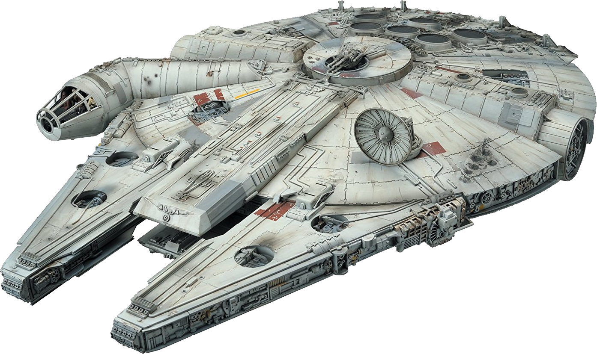

Star Wars é uma das franquias mais icônicas do cinema,
e seus veículos são uma parte essencial do seu universo fascinante.
Desde os magníficos destróieres imperiais até a lendária Millenium Falcon,
as naves espaciais e veículos terrestres de Star Wars têm sido um elemento
importante em todos os filmes e séries da saga.
Os destróieres imperiais são um dos veículos mais
emblemáticos de Star Wars. Essas enormes naves de guerra
foram usadas pelo Império Galáctico para patrulhar as fronteiras
do seu território e manter o controle sobre os planetas conquistados.
Com sua aparência intimidadora e capacidade de transportar centenas de
tropas e veículos, os destróieres eram um símbolo de poder e força.
Outro veículo importante em Star Wars é o X-Wing. Essas naves
espaciais foram usadas pela Aliança Rebelde para combater o Império Galáctico.
Com suas asas em forma de X e armas poderosas, os X-Wings foram fundamentais
para a vitória da Rebelião na Batalha de Yavin, que destruiu a Estrela da Morte.
Além dos veículos espaciais, Star Wars também apresenta uma variedade de
veículos terrestres e aquáticos. O Landspeeder é um dos mais conhecidos,
sendo o veículo usado por Luke Skywalker em Tatooine. O AT-AT, por sua vez,
é um veículo de transporte blindado e armado utilizado pelo Império Galáctico
para transportar tropas e equipamentos.
Mas, sem dúvida, um dos veículos mais icônicos de Star Wars é a lendária Millenium Falcon.
Com sua aparência desgastada e uma série de modificações,
a Millenium Falcon é a nave espacial mais rápida da galáxia,
capaz de percorrer doze parsecs em um tempo recorde.
Ela foi pilotada por Han Solo e Chewbacca, e se tornou uma parte fundamental da equipe da
Aliança Rebelde.
Em resumo, os veículos de Star Wars são uma parte
fundamental do universo da saga. Com seus designs únicos e capacidades
impressionantes, eles são uma parte essencial da mitologia de Star Wars
e uma das razões pelas quais a franquia é tão amada pelos fãs em todo o mundo.

|
Nome |
Fação |
Descrição |
 |
X-wing |
Aliança Rebelde / Nova República |
Asas em forma de "X"; versátil e bem armado |
 |
TIE Fighter |
Império Galáctico |
Asas em forma de painel solar; leve e ágil |
 |
B-wing |
Aliança Rebelde |
Asas giratórias; design pesado e bem armado |
 |
Naboo N-1 Starfighter |
Planeta Naboo |
Elegante e altamente manobrável; coloração amarela e cromada |
|
Nome |
Facção |
Descrição |
 |
Star Destroyer |
Império Galáctico |
Nave gigante com uma forma triangular distintiva, com um grande número de armas e uma ponte elevada na frente. |
 |
Mon Calamari Cruiser |
Aliança Rebelde / Nova República |
Nave com um casco curvo e estilizado, com uma grande ponte central e motores alongados. |
 |
Venator-class Star Destroyer |
República Galáctica |
Nave com um casco esguio e alongado, com uma grande ponte na parte superior e duas grandes asas que se estendem para baixo. |
 |
Super Star Destroyer |
Império Galáctico |
Nave extremamente grande com um comprimento que pode chegar a 19 km, com uma forma similar a um "U" invertido e uma ponte elevada na parte de trás. |
|
Nome |
Fração |
Descrição |
 |
74-Z speeder bike |
Império |
Veículo de reconhecimento e patrulha utilizado pelas forças imperiais em planetas com terreno desafiador. |
 |
All Terrain Armored Transport (AT-AT) |
Império |
Veículo de transporte de tropas e combate terrestre altamente resistente utilizado pelas forças imperiais. |
 |
All Terrain Scout Transport (AT-ST) |
Império |
Veículo de reconhecimento e combate terrestre com altura de locomoção elevada utilizado pelas forças imperiais. |
 |
Snowspeeder |
Aliança Rebelde |
Veículo aéreo terrestre utilizado para combate em planetas com condições climáticas severas, como neve. |
| Imagem |
Nome |
Fação |
Descrição |
 |
Trident-class assault ship |
Confederação de Sistemas Independentes |
Nave de assalto anfíbia |
 |
Manta droid subfighter |
Federação de Comércio |
Nave de combate subaquático não tripulada |
 |
Gungan bongo submarine |
Gungans |
Transporte subaquático |
 |
Aquatic Terrain Armored Transport |
Confederação de Sistemas Independentes |
Transporte blindado anfíbio |
Voltar ao topo